Formularios¶
Formularios¶
Los formularios son un tipo de objeto de LibreOffice Base que permiten introducir, modificar y visualizar datos de una forma más sencilla y ordenada que trabajando directamente sobre las tablas.
Mientras que las tablas almacenan la información, los formularios se encargan de recogerla y mostrarla, ofreciendo una interfaz más cómoda para el usuario.
En una base de datos se pueden crear varios formularios basados en una misma tabla, y cada formulario puede:
- Mostrar todos los campos de una tabla o solo algunos.
- Usar campos de distintas tablas, siempre que estén relacionadas.
Para crear un formulario vamos al panel Tareas de la sección Formularios y seleccionamos:
- Crear un formulario mediante el asistente….
- Crear un formulario en modo diseño....
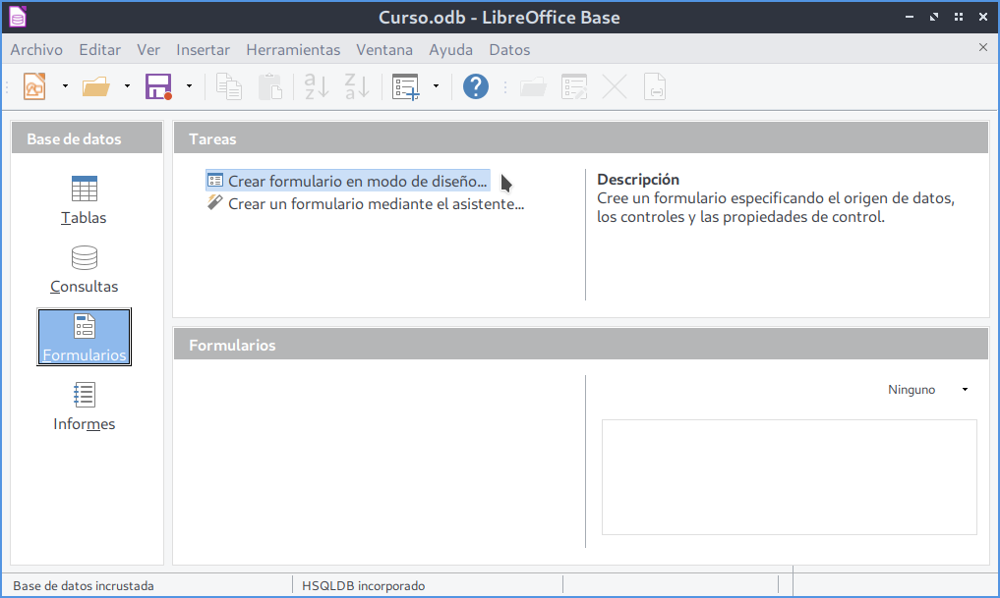
Creación de formularios mediante el asistente¶
Para explicar su funcionamiento, vamos a realizar un formulario sobre la tabla Interpretes para mostrar:
- Nombre
- Apellidos
- Nacionalidad de los intérpretes
- Seleccionar campos a mostrar
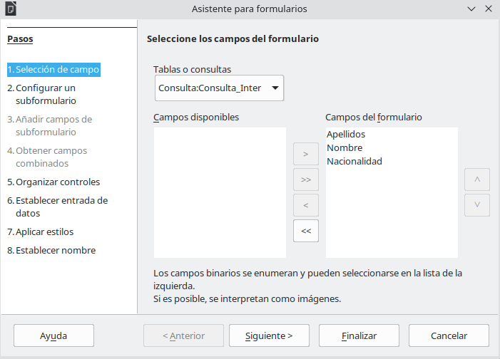
- Organizamos los controles del formulario (opcional)
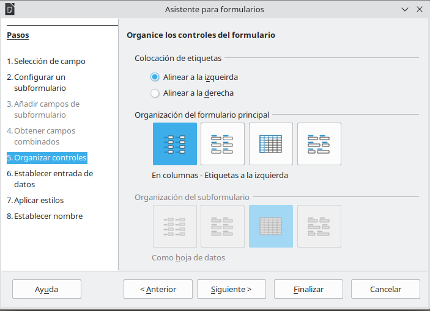
- Aplicar criterios de manipulación de datos
- El formulario puede utilizarse para introducir únicamente datos nuevos.
- El formulario puede mostrar todos los datos.
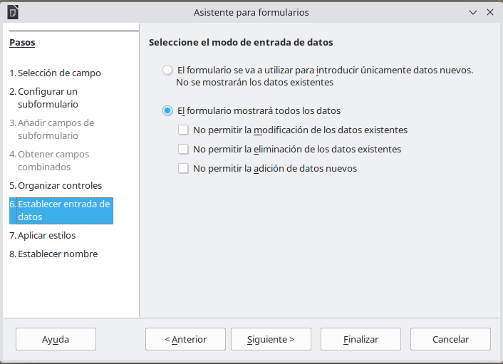
- Aplicar estilos
- El formulario puede tener distintos fondos de pantalla, bordes o efectos 3D.
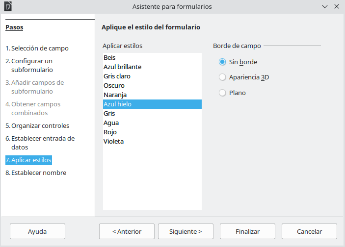
- Guardar el formulario
- Nombre: Formulario_Interpretes.
- Elegir si se muestra el resultado inmediatamente o se abre en modo diseño.
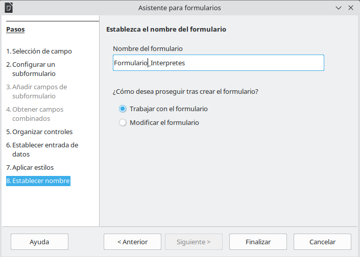
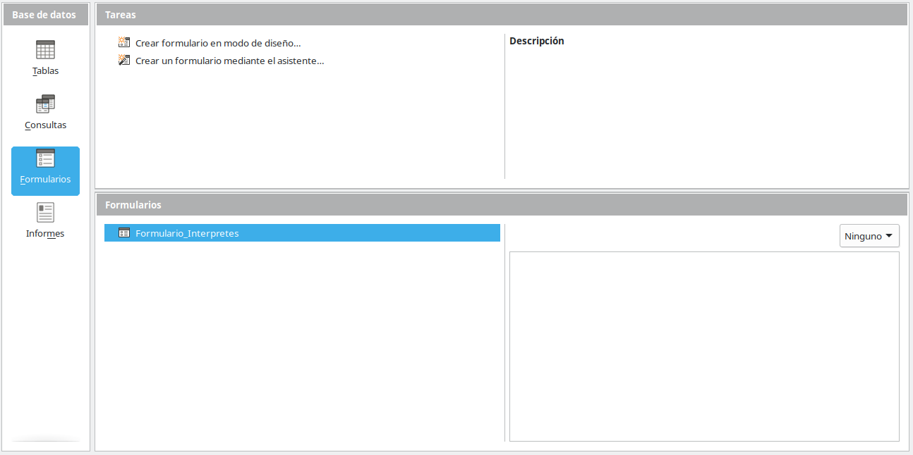
- Uso del formulario
- Usar el formulario: doble clic sobre él.
-
Para movernos entre los diferentes registros y realizar distintas operaciones sobre ellos, usaremos la barra Navegación de formularios que nos aparece en la parte inferior en la que destacan los siguientes elementos:
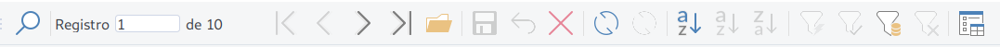
Barra de navegación entre los registros de un tabla (mediante un formulario) - Buscar registro: Despliega un diálogo para buscar un registro de acuerdo a diferentes criterios que coincidan con el contenido.
- Número de registro actual y total de registros: Si escribimos un número válido en el campo Número de registro, el formulario desplegará la información relativa a ese registro. Si ponemos un número mayor al total de registros, aparecerá el último de la tabla.
- Registro primero, anterior, siguiente y último: Se mueve entre los registros.
- Registro nuevo: Adiciona un nuevo registro al final de la tabla.
- Eliminar registro: Usar con cuidado porque cualquier cambio realizado será permanente.
- Actualizar: Modifica el valor del registro.
- Ordenar: Aparece un diálogo para establecer criterios ascendente o descendente para hasta tres campos.
- Filtros de formas: Aparece un diálogo para gestionar y aplicar filtros más complejos que extraerán algunos registros de la tabla o consulta en la que está basado el formulario.
- Origen de datos como tabla: Aparece un panel superior con los datos que dan origen al formulario, y se muestran en formato de tabla (parrilla, celdas o como guste llamarle).
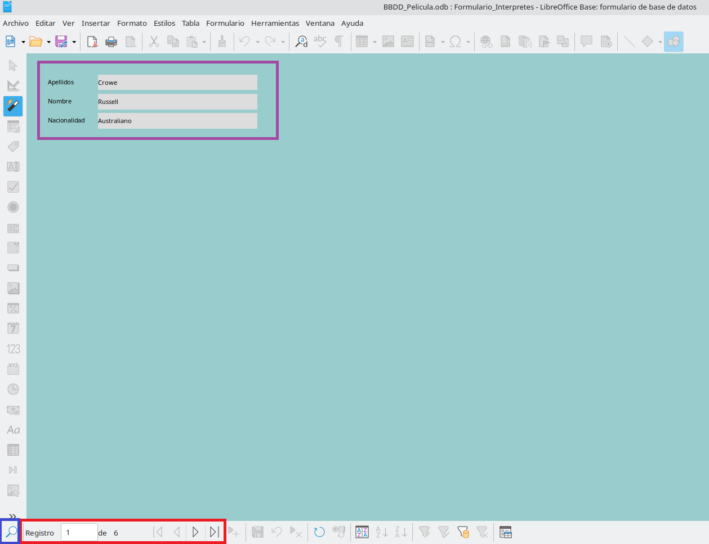
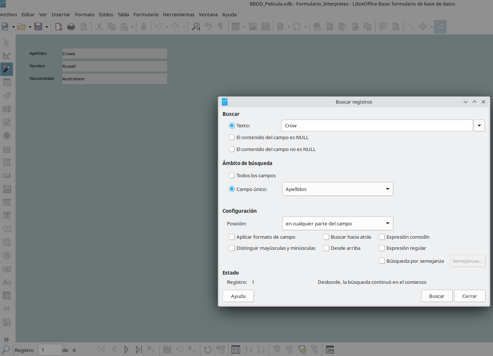
Creación de formularios en modo diseño¶
Para un mejor control sobre el diseño y funcionamiento del formulario podemos trabajar en modo Diseño.
Al seleccionar Crear formulario en modo de diseño…, se abre la ventana de diseño de formularios.
Toda la información de un formulario se gestiona mediante controles. Si cualquiera de estas barras no nos aparecieran por cualquier motivo, se puede acceder a ellas a través del menú Ver > Barras de herramientas y activando la casilla que corresponde a la barra faltante.
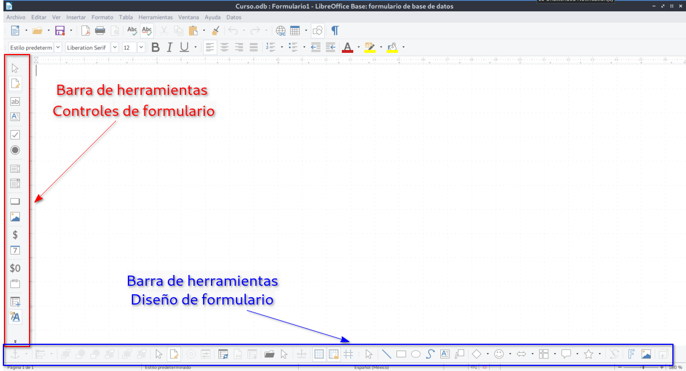
Los campos de control más importantes que aparecen en la barra Controles de formulario son los siguientes:
- Selección: Permite hacer activo el control y moverlo de lugar.
- Modo de diseño: Activa y desactiva el modo Diseño. Nos permite alternar entre el modo Usuario (cuando se puede introducir datos a través de los campos) y el modo Diseño (cuando se pueden editar los campos de control).
- Navegador de formularios…: Muestra todos los formularios y subformularios del documento actual con sus respectivos campos de control.
- Casilla de verificación: Para valores Sí/No. Se puede utilizar dentro de un grupo de opciones.
- Cuadro de texto: Sirve para mostrar o introducir datos.
- Campo formateado: Es un cuadro de texto en el que se define el formato de las entradas y salidas, así como los valores limitadores que las afectan.
- Botón: Inserta un botón que al ser pulsado ejecuta instrucciones.
- Botón de opción: Permiten al usuario elegir entre diversas opciones.
- Listado: Permite seleccionar un elemento de una lista.
- Cuadro combinado: Permite seleccionar un elemento de una lista o escribir el dato directamente.
- Etiqueta: Sirve para mostrar texto predefinido.
- Asistente de controles de formulario: Especifica si se debe o no activar el asistente al insertar un campo de control nuevo. Estos asistentes ayudan a introducir las propiedades de los cuadros de listas, los campos de control de tablas y otros campos de control.
- Cuadro de grupo: Sirve para crear marcos donde agrupar campos de control.
- Control de tablas: Se utiliza para crear un campo de control con una tabla de la base de datos.
Vamos a volver a crear un formulario para la tabla Interpretes, que permita introducir nuevos intérpretes.
-
Crear el formulario en modo diseño
- En la ventana de diseño, abrir el Navegador de formularios.
- Botón derecho sobre Formulario → Nuevo → Formulario.
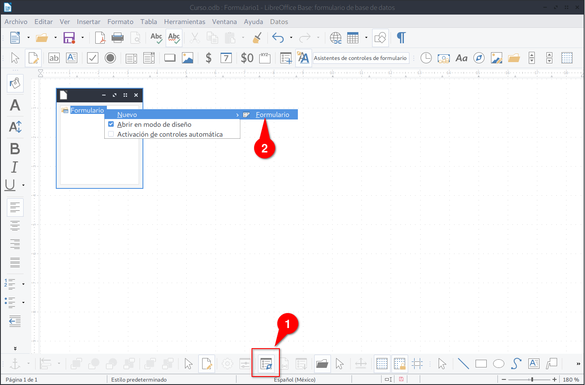
Creación de un nuevo formulario 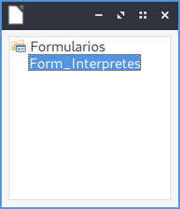
Renombrar el formulario como Form_Interpretes -
Conectar el formulario con la tabla
- Botón derecho sobre Form_Interpretes → Propiedades.
- En la pestaña Datos, seleccionar: Contenido → Interpretes
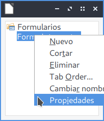
Selección de la tabla Interpretes 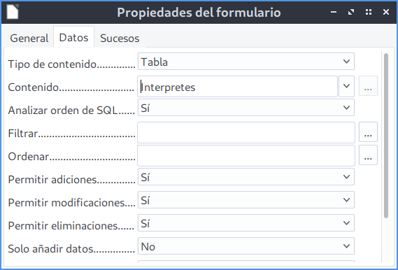
Selección de la tabla Interpretes -
Guardar el formulario
- Archivo → Guardar
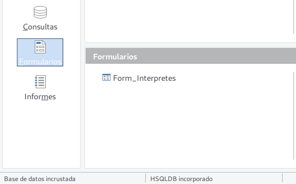
Guardar el formulario -
Añadir campos al formulario
- Seleccionar Cuadro de texto.
- Dibujarlo en la zona de trabajo.
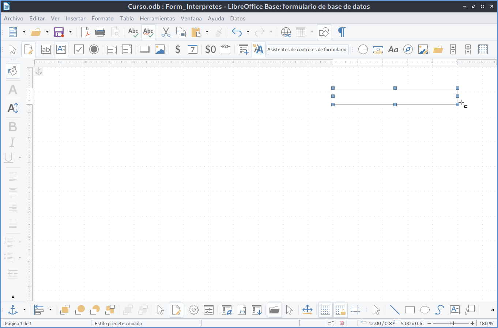
Inserción de un cuadro de texto - Botón derecho sobre el control → Control…
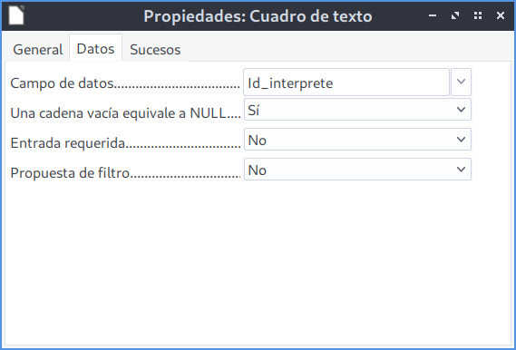
Propiedad Campo de datos - En la pestaña Datos: Campo de datos →
Id_Interprete - En la pestaña General: Nombre →
CampoId_Interprete
Buena práctica
Es recomendable dar nombres descriptivos a los controles para facilitar su identificación y posibles usos futuros (por ejemplo, en macros).
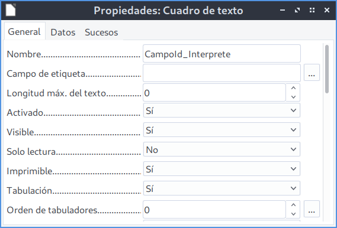
Indicación del nombre del campo -
Añadir etiquetas
Delante del cuadro de texto debemos poner una Etiqueta para que cualquier usuario que utilice el formulario conozca lo que debe introducir.
- Insertar una Etiqueta delante del cuadro de texto.
- Modificar sus propiedades (texto, fuente, tamaño) debemos hacer doble clic sobre la etiqueta aparecerá una ventana de propiedades.
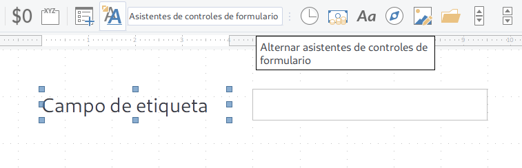
Inclusión de campo etiqueta 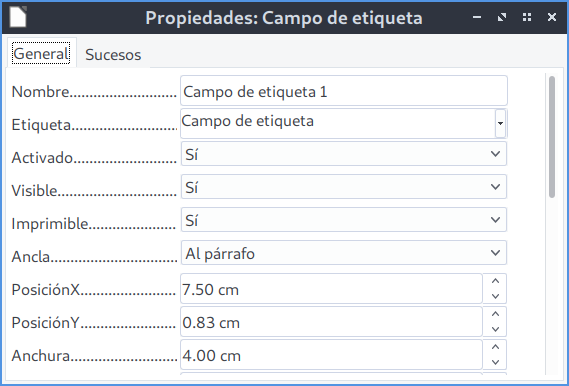
Propiedades del campo de Etiqueta - Ejemplo modificación Tipo de letra.
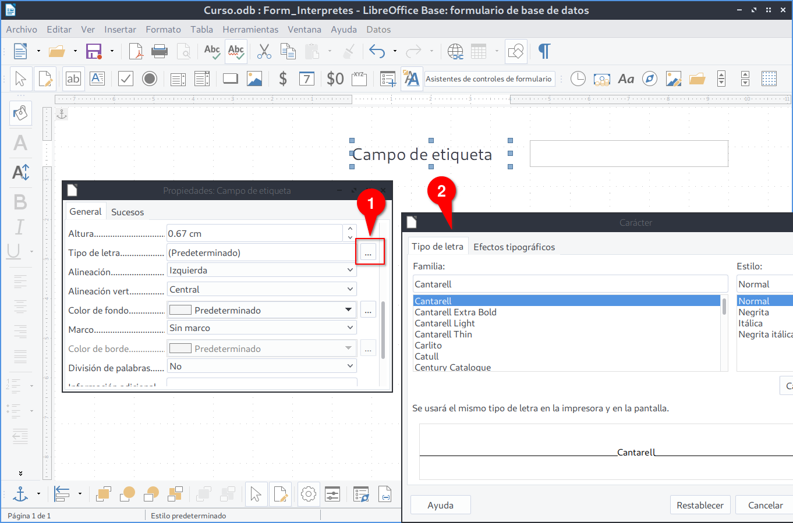
Propiedad Tipo de letra del campo Etiqueta 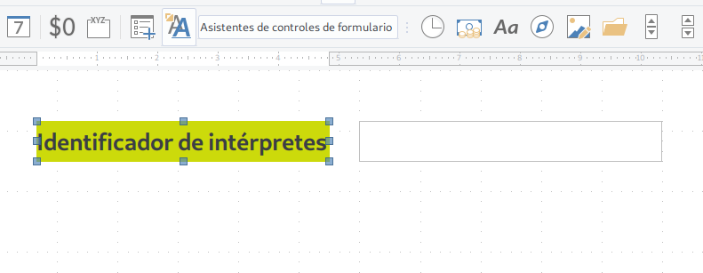
Formulario tras cambio de propiedades de etiqueta -
Formulario completo
- Repitiendo estos pasos para todos los campos de la tabla
Interpretes, se obtiene un formulario completo.
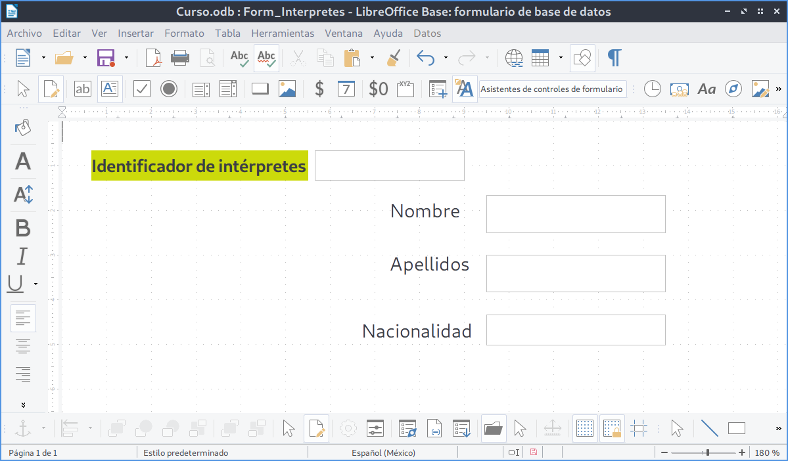
Formulario Form_Interpretes con todos los campos incluidos - Repitiendo estos pasos para todos los campos de la tabla
-
Guardar los cambios y cerrar el diseño
- Editar el formulario: botón derecho → Editar…
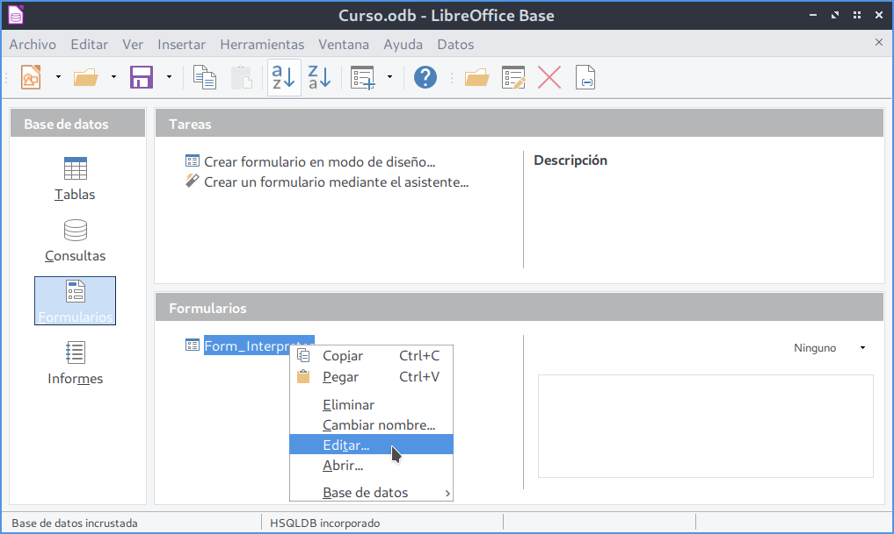
Editar formulario creado -
Uso del formulario
- Usar el formulario: doble clic sobre él.
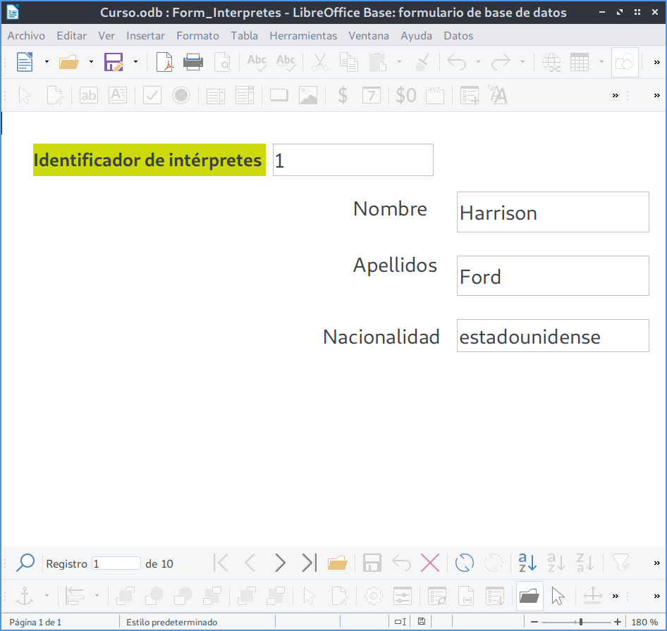
Ver e insertar datos en formulario
Actividad
📝 AA5.9 Formularios en la base de datos BBDD_Peliculas¶
(C.ESP1 / CE1.1, CE1.2 / IC1-3p)
- Abre la base de datos
BBDD_Pelicula - Crea un formulario mediante el asistente
Genero. - Crea un formulario mediante el modo diseño
Peliculas. - Entrega en un Writer con una capturas de pantalla donde se demuestre los pasos para la realización de cada punto del ejercicio.
Actividad Refuerzo
🔨 AAR5.10 Formularios en la base de datos BBDD_Hospital¶
(C.ESP1 / CE1.1, CE1.2 / IC1-3p)
- Abre la base de datos
BBDD_Hospital - Crea un formulario mediante el asistente de la tabla
Médicos. - Crea un formulario mediante el modo diseño de la tabla
Pacientes. - Entrega en un Writer con una capturas de pantalla donde se demuestre los pasos para la realización de cada punto del ejercicio.